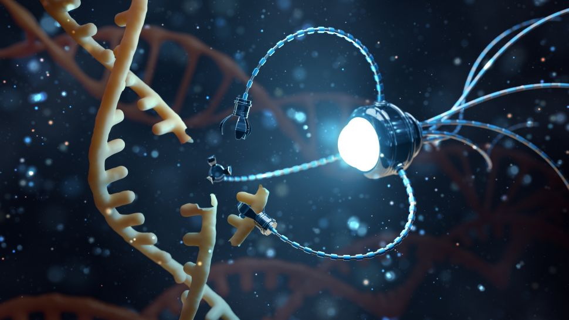
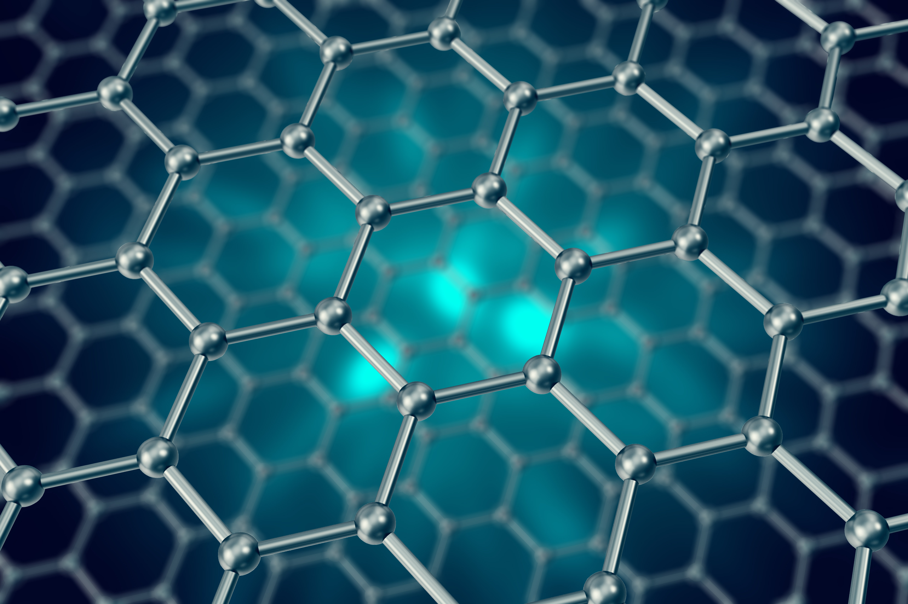
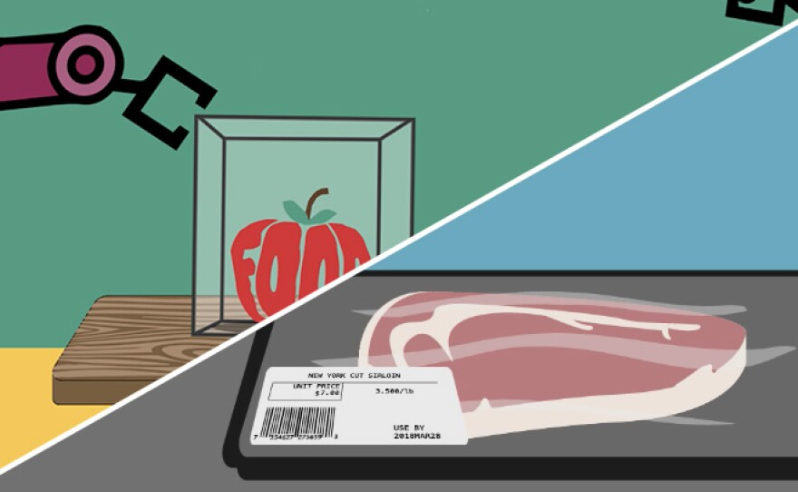
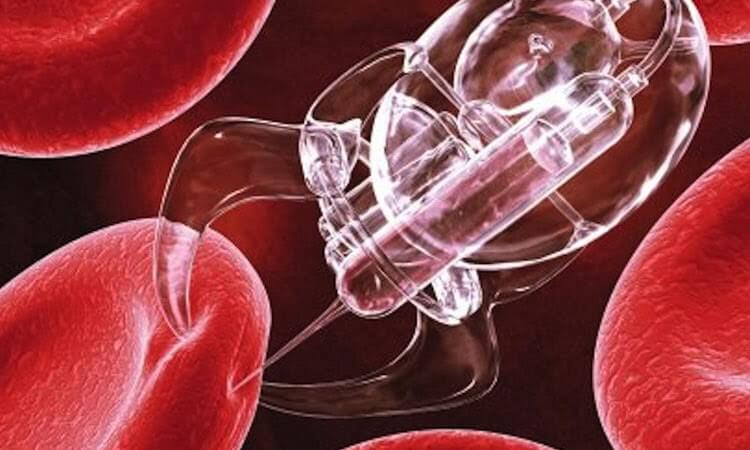

Нанотехнологията представлява съвременно научно и технологично направление, което изследва, създава и прилага материали и структури с размери приблизително от 1 до 100 нанометра. В този мащаб веществата проявяват специфични физични, химични и биологични свойства, различни от тези в макроскопичен размер. Контролът върху материята на атомно и молекулно ниво позволява разработването на нови функционални материали и значително подобряване на съществуващи продукти и процеси. Нанотехнологиите се утвърждават като стратегически фактор за технологично развитие в индустрията, енергетиката, електрониката и хранителния сектор.

Нанотехнологията се основава на манипулиране и инженеринг на структури в нанообластта с цел постигане на контрол върху свойствата на материалите. При намаляване на размерите до наномащаб се увеличава относителната повърхност, което води до промени в реактивоспособността, механичната якост, електропроводимостта и оптичните характеристики. Съвременните нанопродукти обикновено представляват усъвършенствани версии на съществуващи материали, при които са внедрени наночастици, нанокомпозити или наноструктурирани покрития. Този постепенен процес на внедряване води до повишена ефективност, устойчивост и функционалност на крайните изделия.

В хранителната индустрия нанотехнологиите се прилагат за подобряване на хранителните характеристики и стабилността на продуктите. Нанокапсулирането позволява защита и контролирано освобождаване на витамини и биоактивни съединения, което повишава тяхната бионаличност. Наноемулсиите улесняват включването на липофилни вещества в хранителни матрици. Наноматериалите се използват и при разработването на активни и интелигентни опаковки с подобрени бариерни свойства и антимикробна активност, което допринася за удължаване на срока на годност и повишаване на безопасността на храните.

Нанотехнологиите имат важна роля в развитието на енергетиката, защото позволяват създаването на материали и устройства в много малък мащаб. Те подобряват ефективността на различни енергийни технологии. Например наноматериали се използват в соларните панели, за да улавят повече слънчева светлина и да произвеждат повече електричество. В батериите наночастици помагат за по-бързо зареждане, по-голям капацитет и по-дълъг живот. Нанокатализаторите в горивните клетки правят производството на енергия по-ефективно, а специални нанопокрития предпазват оборудването и намаляват енергийните загуби. Така нанотехнологиите допринасят за по-чиста и ефективна енергийна система.
Нанотехнологиите имат важно приложение в медицината и дават нови възможности за лечение и диагностика на заболявания. Наночастици могат да доставят лекарства директно до болните клетки, което прави лечението по-ефективно и намалява страничните ефекти. Те се използват и за създаване на чувствителни сензори, които помагат за по-ранно откриване на заболявания, включително рак. Освен това наноматериалите се прилагат при медицински изображения, импланти и специални покрития за инструменти, които намаляват риска от инфекции. По този начин нанотехнологиите допринасят за развитието на по-прецизна и модерна медицина.

Email: vanijenkov8@email.com
Източници:
https://www.nano.gov/about-nanotechnology/
https://www.nsf.gov/focus-areas/nanotechnology
https://ec.europa.eu/health/scientific_committees/opinions_layman/en/nanotechnologies/l-2/
https://www.sciencedirect.com/topics/agricultural-and-biological-sciences/nanotechnology
https://www.rochester.edu/urnano/about/what-is-nanotechnology.html
https://en.wikipedia.org/wiki/Nanotechnology
https://pmc.ncbi.nlm.nih.gov/articles/PMC7953199
https://en.wikipedia.org/wiki/Nanomedicine
https://www.wikilectures.eu/w/Nanotechnology_in_medicine/Nanomedicine
https://www.sciencedirect.com/science/article/pii/S2949829524000901
https://en.wikipedia.org/wiki/Nanotechnology_in_food
Автор:
Иван Дженков